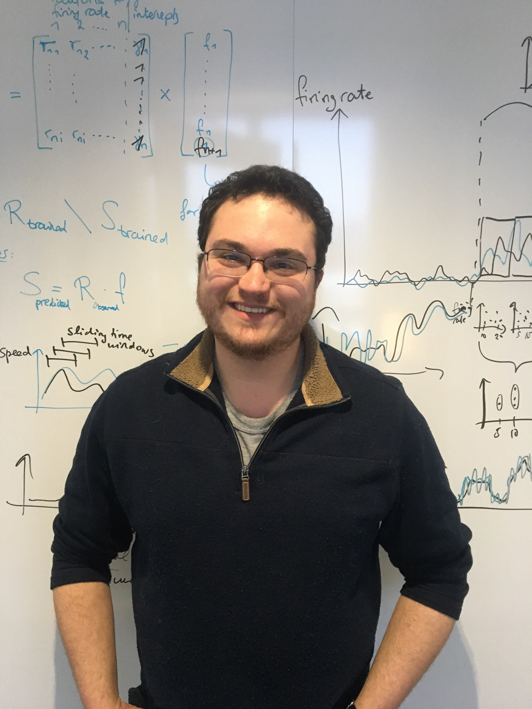

About Me
I am a biomedical engineer with a passion for applying engineering principles to solve problems in basic and translational neuroscience. I am currently a Postdoctoral Research Scientist in the Department of Biomedical Engineering at Columbia University where I work with Prof. Qi Wang to study neural correlates of decision making and attention in mice. As a graduate at SUNY Downstate, I worked with Prof. William Lytton to use biophysically detailed computer models to approach problems in cellular neurophysiology (the influence of dendrites on neuronal input-output transformations) and neurology (spreading depolarization - a feature of many neurological conditions). Prior to graduate school, I worked on various projects on learning, memory, navigation, and neurodegeneration with a focus on neural signal processing. I enjoy collaborating on projects that combine experimental neuroscience and computational modeling.
Education
- Postdoctoral Research Scientist, Columbia University
- Ph.D. in Biomedical Engineering, SUNY Downstate Health Sciences University & NYU Tandon School of Engineering
- B.S. in Biomedical Engineering, Boston University
News
- March 2025 - The first preprint from my postdoc on alpha-rhythm modulation of single neuron spiking activity in behaving mice is up on bioRXiv.
- January 2025 - I was named a finalist SUNY's system-wide Chancellor's Distinguished PhD Graduate Dissertation Award.
- May 2024 - I was awarded SUNY Downstate's Robert F. Furchgott Award for Excellence in Research.